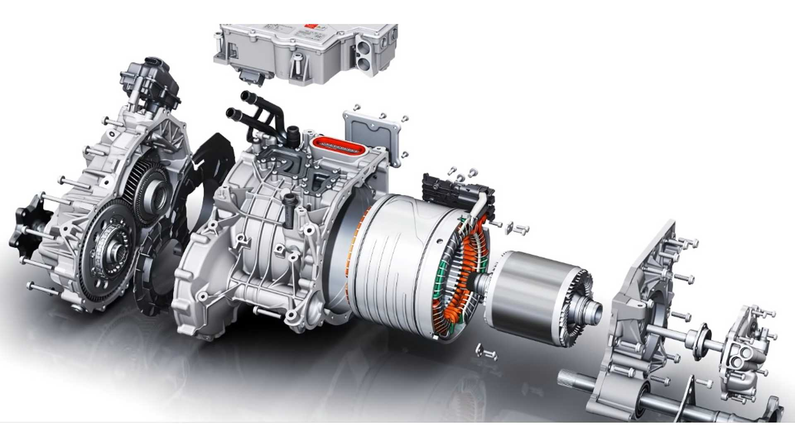

Nuestro origen se remonta a cuando fue fundada nuestra empresa en julio de 2003 por los ingenieros Martin Eberhard y Marc Tarpenning como Tesla Motors. El nombre de la empresa es un tributo al inventor e ingeniero eléctrico Nikola Tesla. Los siguientes tres empleados fueron Ian Wright, Elon Musk y JB Straubel, quienes fueron nombrados co-fundadores de la compañía.

El núcleo de nuestra empresa está en la ingeniería del sistema de propulsión del vehículo eléctrico que incluye: paquete de baterías, motor, electrónica de potencia y software de control que permite que todos los componentes formen un sistema. El diseño modular permite reutilizar componentes en diferentes modelos de Tesla y de otros fabricantes. El sistema es muy compacto y contiene muchas menos piezas móviles que un motor térmico.
Nuestra empresa Tesla Motors realiza el diseño y la ingeniería de carrocería, chasis, interiores, sistemas de calefacción y aire acondicionado. Algunos subsistemas de un automóvil tradicional deben ser rediseñados en un vehículo eléctrico. Por ejemplo, nuestra empresa rediseñó el sistema de climatización para integrarlo con el sistema de gestión de temperatura del paquete de baterías.
Nuestra misión es acelerar la transición del mundo hacia la energía sostenible. ... Hoy, Tesla no solo fabrica vehículos completamente eléctricos, sino que también suministra productos de generación y almacenamiento de energía, limpia y escalable. Conduce rápido; Pisa con cuidado.